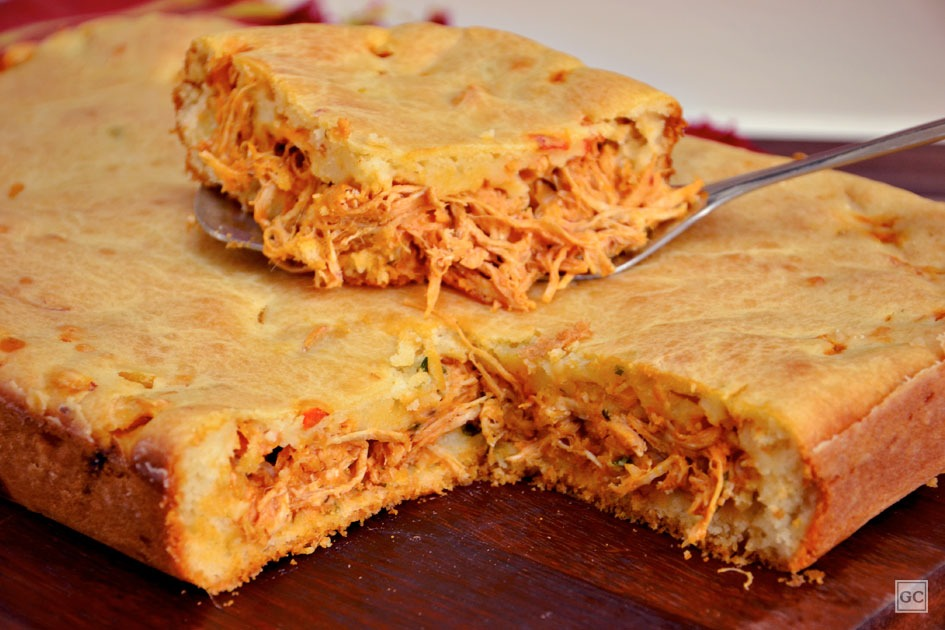

- receita
- 2 xícaras (chá) de leite
- 1 xícara (chá) de óleo
- 3 ovos
- 1 cubo de caldo de galinha
- Sal a gosto
- 3 xícaras (chá) de farinha de trigo
- 1 colher (sopa) de fermento em pó químico
- Margarina e farinha de trigo para untar
- Recheio
- 4 colheres (sopa) de azeite
- 1 cebola picada
- 1 tomate picado
- 2 colheres (sopa) de extrato de tomate
- 1/2 lata de milho escorrida
- 3 xícaras (chá) de frango cozido e desfiado
- 1/2 xícara (chá) de cheiro-verde picado
- Sal e pimenta-do-reino a gosto
- Modo de preparo
- Para o recheio, em uma panela, aqueça o azeite
- em fogo médio e refogue a cebola e o alho por 3
- minutos. Adicione o tomate, o extrato, a ervilha e o
- milho e refogue por mais 3 minutos. Acrescente o
- frango, o cheiro-verde, sal e pimenta e refogue
- por mais 5 minutos. Desligue, misture com o
- requeijão e deixe esfriar
- Bata no liquidificador o leite, o óleo, os ovos e o
- sal. Transfira para uma tigela, acrescente a
- farinha e o fermento, misturando com uma colher.
- Despeje metade da massa em uma fôrma de
- 30cm X 22cm untada e enfarinhada, espalhe o
- recheio por cima e cubra com o restante da
- massa. Polvilhe o queijo ralado e leve ao forno
- médio, preaquecido, por 40 minutos ou até dourar.
- Deixe amornar, corte em quadrados e sirva.